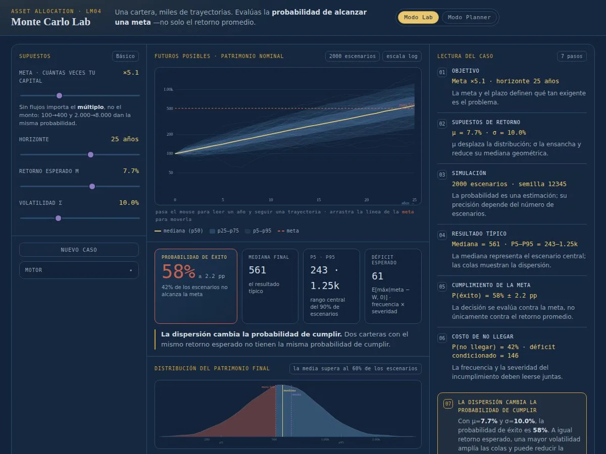
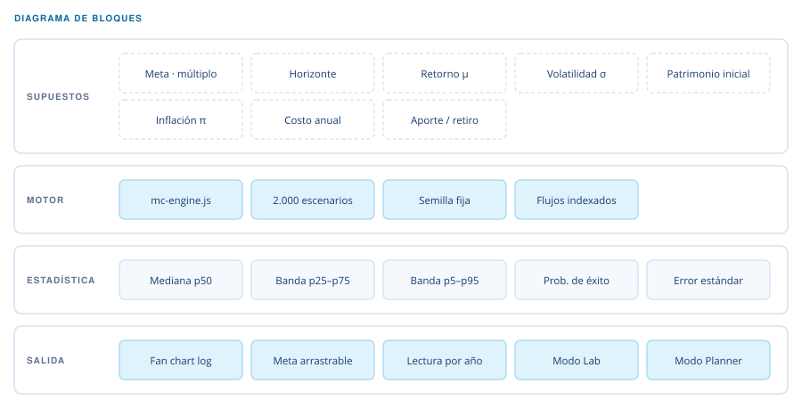

Atlas · Nivel III — Asset Allocation LM04
Laboratorio de Trayectorias de Patrimonio
Una cartera, miles de trayectorias: la probabilidad de llegar a una meta, no el retorno promedio. Herramienta de estudio del material de private wealth del programa CFA.

Qué hace
Simula la evolución del patrimonio bajo incertidumbre y responde una pregunta que el retorno esperado no responde: ¿con qué probabilidad llego a mi meta? Dibuja dos mil trayectorias, las resume en bandas de percentiles y pone la meta como una línea que se arrastra con el mouse.
El concepto. El retorno promedio miente sobre el riesgo de no llegar. Una cartera con 7,7 % esperado y 10 % de volatilidad no entrega 7,7 % cada año: entrega una distribución, y lo que importa es qué fracción de esa distribución cruza tu meta. El lab lo vuelve visible —la probabilidad de éxito aparece con su error estándar, porque una simulación también tiene ruido— y deja ver algo que sorprende: sin aportes ni retiros lo que manda es el múltiplo, no el monto. Ir de 100 a 400 y de 2.000 a 8.000 tienen exactamente la misma probabilidad.
- JavaScript sin framework
- SVG
- Simulación Monte Carlo
Cómo está compuesto
La semilla fija vive en el motor: por eso la misma configuración da el mismo resultado.

Semilla fija
La misma configuración da siempre el mismo resultado: se puede comparar entre corridas.
Meta en términos reales
La meta se puede fijar en moneda de hoy y los flujos crecen con la inflación.
Error estándar a la vista
58 % ± 2,2 pp: la simulación reporta su propia incertidumbre.
Escala logarítmica
Un fan chart en log muestra el crecimiento compuesto sin aplastar los años iniciales.